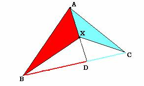
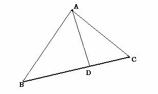

Problema: Dado un triángulo ABC y un punto X, tal que AX corte a BC en un punto D, demuestra que el cociente entre los triángulos AXB y AXC es igual que el cociente BD entre BC:

Lo primero que hemos hecho nosotras es demostrar una propiedad que luego hemos utilizado para resolver el problema.
Propiedad: Dado cualquier triángulo ABC y un punto cualquiera D sobre cualquiera de sus bases, entonces:

El área del triángulo ABD entre el área del triángulo ADC es igual que BD entre DC, ya que:
ABD= (BD * hA) /2
ACD= (DC * hB )/2
Y entonces al dividir el primero entre el segundo, te da BD/DC.
Una vez probado esto, si nos fijamos en el triángulo ABD del enunciado,
vemos que:
ABX / BDX = AX / DX
Si nos fijamos ahora en el triángulo ACD, conseguimos:
ACX / CDX = AX / DX
De lo que se obtiene:
ABX / ACX = BDX / CDX
Y si ahora nos fijamos en el triángulo XBC, obtenemos que:
BDX / CDX = BD / DC
Luego:
ABX / ACX = BDX / CDX = BD / DC
Y de aquí:
ABX / ACX = BD / DC
Que es lo que se pretende demostrar.
Maite y Alicia Peña Alcaraz. Estudiantes de Primero de Bachillerato.
Colegio Portaceli. Sevilla